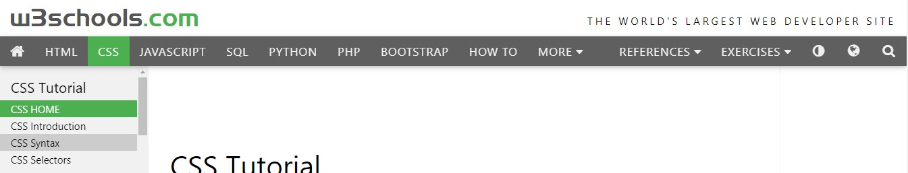
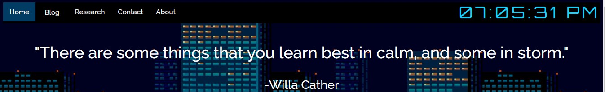
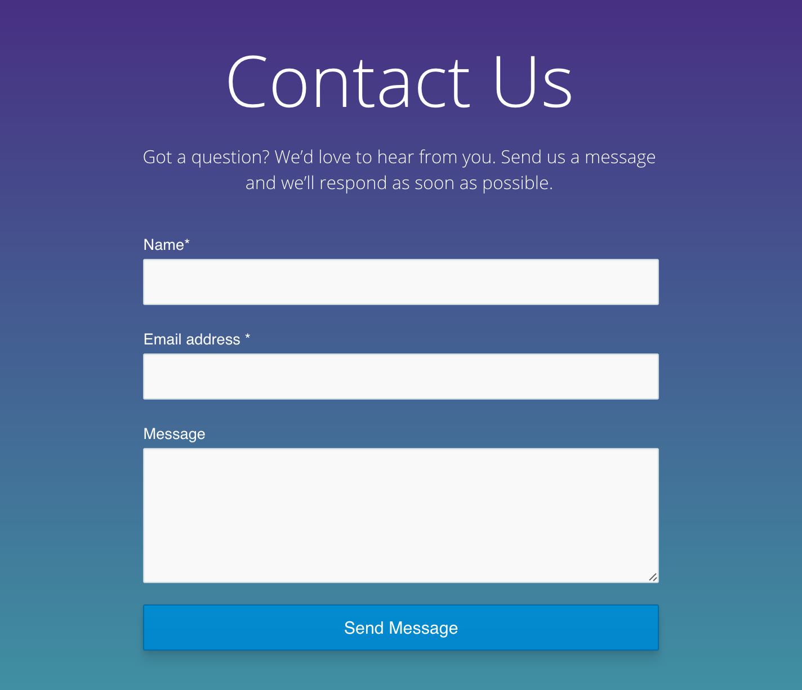
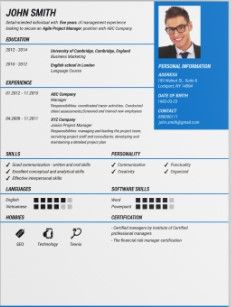
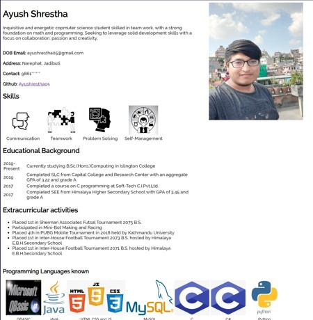
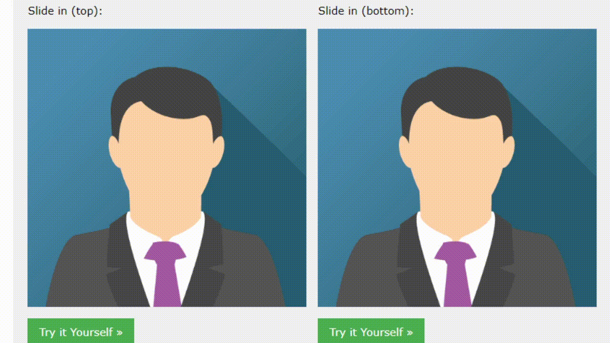

Research

References
Navigation Bar
The navigation bar was made in reference to W3School's Navigation Bar.

Referenced Navigation Bar

Created Navigation Bar
Form
The created Form was made in reference to an example found on VentureHarbour's Website.

Referenced Form
CV
The created CV was made in reference to an low-res CV image on CV Maker's Website.

Referenced CV

Created CV
Blog
The created Blog was made in reference to ClearVoice's Website.


Image Overlay Slide
The created Overlay Slide was made in reference to W3School's Image Overlay Slide

Referenced Overlay Slide